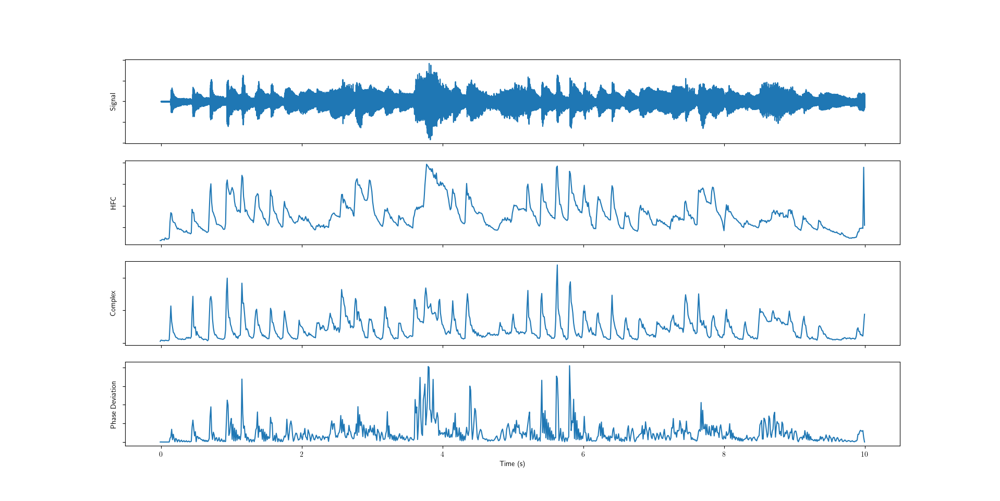
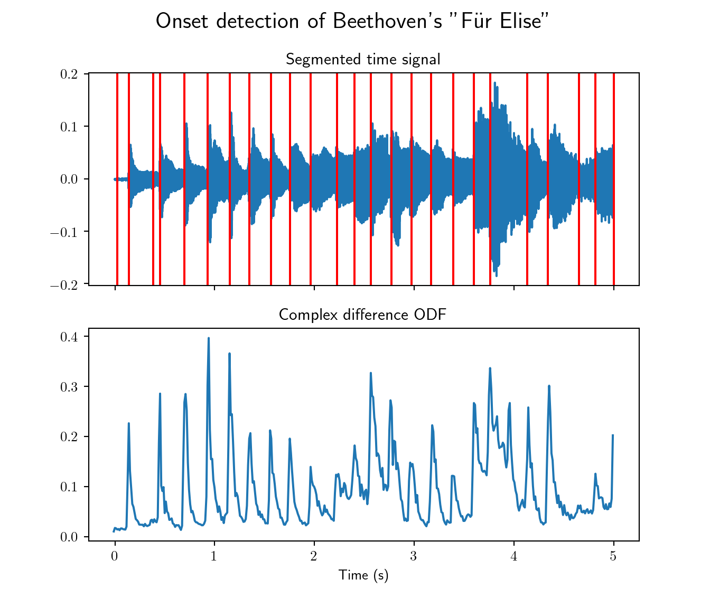

3 Temporal segmentation
3.1 Introduction
Temporal segmentation is the task of finding time boundaries of audio objects, in the case of music signals the audio objects in question are the musical notes.
A musical note’s onset is defined as the time it starts, and its ending time is the offset.
IEEE transactions on speech and audio processing, vol. 13, no. 5, september 2005
The signal form varies according to instruments. The onset profile in the image above corresponds to an instrument producing sudden energy bursts such as a pinched-chord instrument (piano, guitar, etc), or a percussive instrument, unlike bowed-chord instruments and wind instruments that do no exhibit such energy bursts. In both cases, the spectral flux, changes in energy, and/or harmonic distribution are analysed in order to estimate onset times.
(left) a violin onset profile (right) a piano onset profile
The general onset estimation model is a three-step pipeline (Brossier 2006)
- Computing an Onset Detection Function (ODF) that characterizes change in energy and/or harmonic content in a music signal. The change is measured in the time domain, frequency domain, phase domain, or complex domain for analysing onsets of sounds of different natures.
- Calculate a smooth threshold function as ODFs tend to be sensitive to the slightest changes, therefore providing a threshold for viable onset candidates.
- Peak-picking local maxima of the ODF that are greater than the calculated threshold.
3.2 Onset Detection Function (ODF)
We present a few functions that analyse different features of a musical sound that correspond to subsets of musical sources.
3.2.1 High Frequency Content (HFC)
The proposed function (Masri and Bateman 1996) favours wide-band energy bursts over changes in amplitude modulation, and accords a stronger weight to high frequency spectral bins.
\[D_{\text{HFC}}[n] = \sum\limits_{k=1}^{N} k\cdot\left\lVert X[n,k]\right\rVert^2\]
The function emphasises high frequency energy bursts, which makes it more adapted to percussive onsets than than bowed-strings or wind instruments. (Brossier 2006)
3.2.2 Phase Deviation
A different approach proposed by (Bello and Sandler 2003), where the function evaluates phase difference that can help identify tonal onsets as well as percussive onsets.
\[D_{\Phi}[n] = \sum\limits_{k=0}^{N} \left\lvert \hat{\varphi}[n, k] \right\rvert\]
where
- \(\mathrm{princarg}(\theta) = \pi + ((\theta + \pi) mod (-2\pi))\)
- \(\varphi(t, f) = \mathrm{arg}(X(t, f))\)
- \(\hat{\varphi}(t, f) = \mathrm{princarg} \left( \frac{\partial^2 \varphi}{\partial t^2}(t, f) \right)\)
The phase deviation function can result in false positives as phase changes occur in noisy signals.
3.2.3 Complex Distance
Another ODF is presented in (Duxbury et al. 2003) that qualifies changes in both magnitude and phase in order to detect percussing and tonal onsets.
\[D_{\mathbb{C}}[n] = \sum\limits_{k=0}^{N} \left\lVert\hat{X}[n, k] - X[n, k]\right\rVert^2\]
where \(\hat{X}[n, k] = \left\lvert X[n, k]\right\rvert \cdot e^{j\hat{\varphi}[n, k]}\)
The presented function combines spectral difference and phase-based approaches, by borrowing the phase deviation function from (Bello and Sandler 2003)

3.3 Thresholding & Peak-picking
Since Onset Detection Functions are usually sensitive to the slightest perturbations, false positives belong to a subset of the local maxima of the ODF. In order to filter such values, a smoothed version of the ODF can serve as threshold for eliminating insignificant peaks.
A windowed moving average is a good threshold function, it is defined as the convolution product of the ODF with the window function. In our implementation we have used a Hann window as it limits the aliasing phenomenon in spectras.
3.4 Results
We apply our onset detection pipeline to the same audio sample of Beethoven’s “Für Elise”.
from muallef.onset import Onset
fur_elise.cut(stop=5)
fs = fur_elise.sampleRate
x = fur_elise.signal
t = fur_elise.time()
onset = Onset(x, fs, method='complex')
onsets = onset()
fig, ax = plt.subplots(2, 1, sharex=True)
fig.set_figheight(6)
_ = fig.suptitle("Onset detection of Beethoven's \"Für Elise\"", fontsize=16)
_ = ax[0].set_title("Segmented time signal")
_ = ax[0].plot(t, x)
for on in onsets:
_ = ax[0].axvline(x=on, color='red')
_ = ax[1].set_title("Complex difference ODF")
_ = ax[1].plot(onset.onsetTime, onset.onsetFunction)
_ = ax[1].set_xlabel('Time (s)')
plt.show()
References
Bello, J.P., and M. Sandler. 2003. “Phase-Based Note Onset Detection for Music Signals.” In 2003 IEEE International Conference on Acoustics, Speech, and Signal Processing, 2003. Proceedings. (ICASSP ’03)., 5:V–441. https://doi.org/10.1109/ICASSP.2003.1200001.
Brossier, Paul M. 2006. Automatic Annotation of Musical Audio for Interactive Applications.
Duxbury, Chris, Juan Pablo Bello, Mike Davies, and Mark Sandler. 2003. “COMPLEX DOMAIN ONSET DETECTION FOR MUSICAL SIGNALS,” 4.
Masri, Paul, and Andrew Bateman. 1996. “Improved Modelling of Attack Transients in Music Analysis-Resynthesis,” 4.